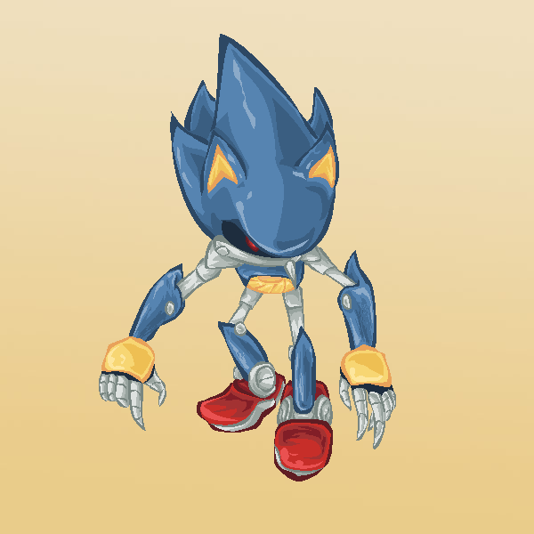

🏠 首頁
📁 同人畫作作品區
機械禿一隻
👤 orzilovepm
🕐 2009-12-28 09:55:58
嘛，其實這張是受某人委託的圖，
第一次挑戰機械型人物...可能有很多地方還很生疏，請多指教 ＝u＝＂

附件: Metal Sonic０１.PNG
（點圖可放大觀賞）
現在要先去忙，晚上會回來
（感謝您的點閱 OuO ）
👤 knight2002y
🕐 2009-12-28 10:04:56
[i=s] 本文章最後由 knight2002y 於 2009/12/28 06:06 PM 編輯 [/i]
畫風很讚唷！！
也沒什麼不好的～～
不過，金屬的質感，就是白色(光點)、金屬原色、亮色以及暗色而已。
如果夠閒的話，還可以加上反射光影。
例如：身體上面反映右手之類的。
(這要很閒才有可能……(汗))
－－－－
話說……MS好像只有三根刺！XD
👤 orzilovepm
🕐 2009-12-28 12:25:18
[i=s] 本文章最後由 orzilovepm 於 2009/12/28 08:26 PM 編輯 [/i]
2#
knight2002y
這...等我畫完的話右手也差不多報銷了 ＞▽＜＂＂
感謝評語～～
原本想把這張圖的深淺色調畫豐富些，不過礙於右手最近肌腱反覆發炎的窘境...只好偷懶了...（←名正言順的打混）
咳，是說我不太確定它的頭髮到底有幾根 ＞u＜＂
我是到處找同人圖參考的，因為官方的感覺好像比較圓渾，個人比較偏愛稍微尖銳的機械感這樣～
（另外感謝賞Ｒ的各位～～）